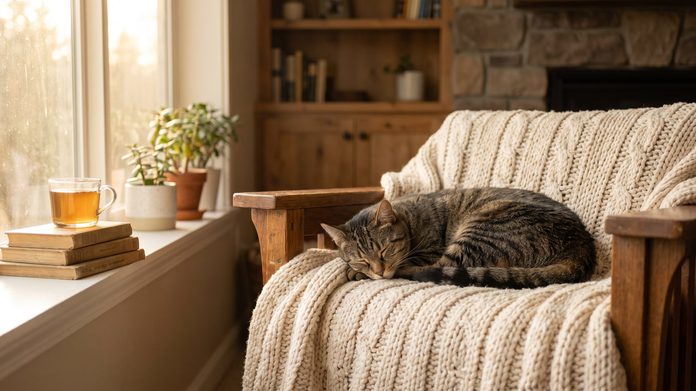

Котёнок приедет через несколько дней, а в квартире ещё ничего не готово. Провода на полу, цветок в горшке на подоконнике, бытовая химия под раковиной. Всё это нужно убрать до его приезда. Эта инструкция поможет купить нужное без лишнего и за один обход проверить квартиру на безопасность.
🐾 Чтобы уход не держать в голове
AnimaLife напомнит, когда стричь когти, вычёсывать, купать и обрабатывать от паразитов, и заведёт дневник по вашему питомцу. Бесплатно.
Настроить напоминания → Настроить в MAX →
У вас iPhone? AnimaLife есть в App Store
Лучше закупиться заранее, чем бежать в магазин в день приезда. Вот базовый список:
Котёнок исследует всё, что видит. Несколько мест в квартире нужно проверить до его приезда.
Провода. Котята грызут провода охотно. Уберите зарядки с пола, закрепите кабели за мебелью или спрячьте в кабель-каналы.
Окна. Москитная сетка котёнка не удержит: он в неё врежется и выпадет. Нужна специальная сетка-антикошка или решётка, которую крепят на рамы.
Мелкие предметы. Нитки, резинки, иголки, монеты, бусины котёнок может проглотить. Проверьте полы и доступные полки.
Щели за мебелью и техникой. Котята находят щели за холодильником, стиральной машиной и духовкой. Перед запуском машины стоит проверить, нет ли там котёнка. Щели за диваном и шкафами лучше закрыть.
Бытовая химия и лекарства. Уберите под замок или на недоступную высоту: моющие средства, таблетки, удобрения для цветов.
Опасные растения. Лилии опасны для кошек: даже небольшое количество пыльцы вызывает тяжёлое отравление. Также опасны диффенбахия, олеандр, молочай, плющ. Если не уверены насчёт конкретного растения, уберите его подальше.
Лоток ставят в тихом месте, куда котёнок может зайти без помех: туалет, ванная, угол коридора. Лоток и миски ставят в разных местах: кошки не едят рядом с туалетом. Лежанку ставят там, где тепло и нет сквозняков.
В день приезда закройте котёнка в одной небольшой комнате с лотком, мисками и лежанкой. Слишком большое пространство пугает. Пусть обнюхивает территорию в своём темпе, не тискайте.
Признаки нормальной адаптации: ест и пьёт, пользуется лотком, начинает играть, через 1–2 дня выходит изучать остальные комнаты без паники.
Первый визит лучше запланировать в первые 1–2 недели: врач осмотрит котёнка и составит или уточнит график прививок. Если котёнок уже привит, возьмите у заводчика паспорт с отметками.
Поводы обратиться к врачу раньше: не ест и не пьёт больше суток, очень вялый, долго не ходит в лоток или ходит с криком. Это не норма первых дней.
Материал носит информационный характер и не заменяет очную консультацию ветеринара.
🐾 Заведите дневник ухода за кошкой
Вес, шерсть, обработки, прививки — всё в одном месте. А если что-то смущает, AI-ветеринар ответит круглосуточно и бесплатно.
Завести дневник → Завести в MAX →
У вас iPhone? AnimaLife есть в App Store
🐾 Понравился разбор?
Подпишитесь на канал — каждый день разбираем по одному тревожному симптому у кошек и собак: что в пределах нормы, а когда пора к врачу. Подпишитесь, чтобы не пропустить разбор, который может спасти здоровье вашего питомца.